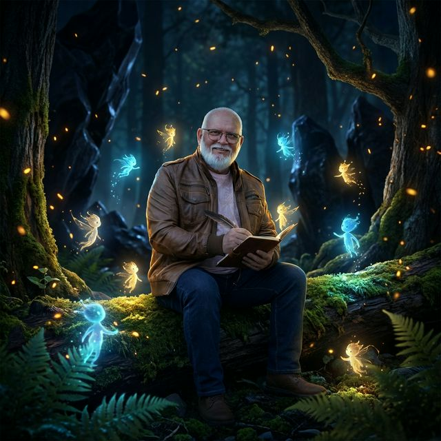
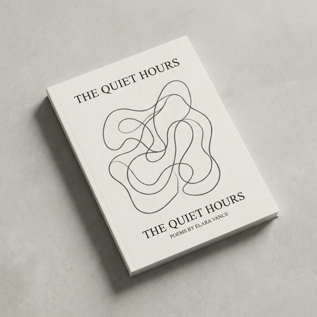
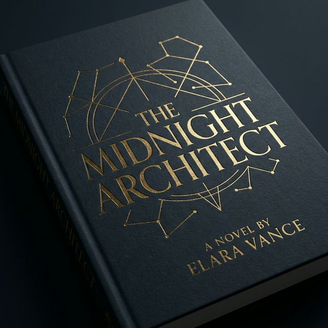

A.P.
Torrescusa
Autor, Escritor y Poeta.

Tinta de
cicatrices

Orígenes y el desafío de la dislexia
Ángel Pérez Torrescusa nació en Extremadura y se crio en el País Vasco. Actualmente escribe desde Castro Urdiales, donde el mar y las rocas acompañan sus reflexiones. Su vida ha estado marcada por duras experiencias y por el desafío de la dislexia, que lejos de detenerlo, se transformó en una fortaleza para forjar una relación única con las palabras.
Filosofía literaria
Para Torrescusa, escribir es un acto de "alquimia personal". Su filosofía creativa se basa en no glorificar el sufrimiento ni borrar sus marcas, sino en "escribir con tinta de cicatrices", utilizando el dolor y las batallas íntimas como materia prima. Sus textos ofrecen "brasas" para que el lector ilumine sus propias sombras.
Resiliencia y madurez
El autor se describe a sí mismo como un superviviente. Tras sufrir traiciones, adoptó una postura sanadora: "Memoria tengo; odio, nunca". Esa sanación le enseñó a no mirar atrás, descubriendo que, tras rendirse a la orilla de sí mismo, su verdadera vida comenzó después de los cuarenta.
"Escribo porque hay heridas que necesitan convertirse en tinta."
Obras Publicadas
Adquiere tus ejemplares

El amor del fénix
Un viaje íntimo de cenizas, combustión, renacimiento y vuelo. Un poemario sobre resiliencia que demuestra que siempre es posible volver a empezar.

Los Portadores del Ojo Verde
Fantasía con realismo mágico en un bosque vivo. Unai, joven marcado con el enigma, emprende un viaje para salvar Monte Redondo recuperando Las Trufas Doradas.
Personajes
Habitantes de Monte Redondo
Un joven marcado con el enigmático Ojo Verde. Emprende un peligroso viaje hacia las cumbres para encontrar a los otros Portadores y recuperar Las Trufas Doradas.
Acompaña a Unai en su misión. Aunque no posee la marca y no puede ver ni oír los velos del mundo mágico, su vínculo y valentía son vitales para la aventura.
Entidades ancestrales de los que dependen los humanos para sobrevivir. Su hogar, Monte Redondo, muere lentamente, esperando ser restaurado por la magia antigua.
Fases del Fénix
"La oscuridad de la pérdida y el vacío. Mirar el dolor de frente tras la caída."
"El ardor de la lucha. Una crítica a un mundo que constantemente pone fronteras al amor."
"El descubrimiento de un amor que sana y abraza todas y cada una de las cicatrices."
"La celebración de un sentimiento que trasciende por completo la distancia y el tiempo."
Hablemos.
hola@aptorrescusa.comPara consultas literarias, entrevistas, prensa o simplemente para compartir unas palabras.